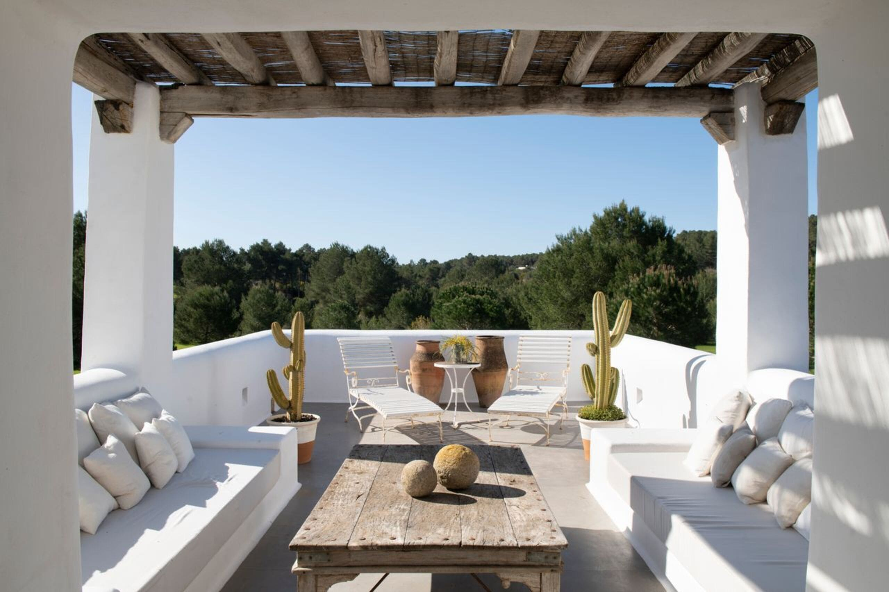

Una ventana para explorar y dejarte inspirar por el diseño
mediterráneo moderno
Descubre cómo los espacios abiertos y multifuncionales, junto con
materiales naturales como piedra y
madera,
crean hogares que reflejan la serenidad y luminosidad del Mediterráneo

Sumérgete en diseños que integran interior y exterior, aprovechando la luz
natural y la simplicidad de
las
formas, para ofrecer una experiencia de vida en armonía con el entorno